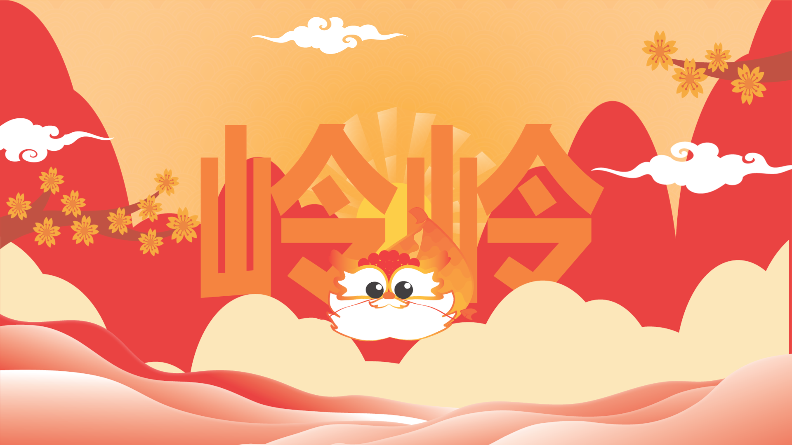
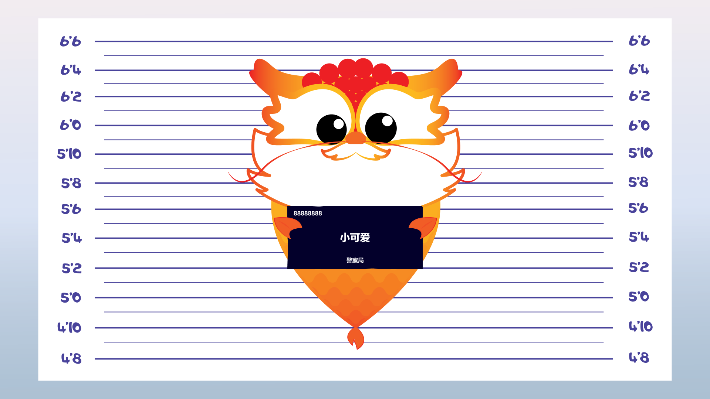

岭岭
受岭南文化遗产与传统象征体系启发的当代文化IP。

概述
玲玲 是一个文化角色IP项目，灵感来源于岭南传统、建筑以及地域象征体系。该项目通过当代插画与动态设计，对传统文化元素进行重新诠释。
视觉开发
角色系统结合了传统纹样、温暖的色彩体系以及简化的几何造型，构建出一种既富有趣味性又扎根文化语境的视觉识别系统。


动画
使用 After Effects 与 Premiere Pro 制作了一段短动画叙事，通过层叠式转场与环境叙事手法，使角色及其所处的世界得以动态呈现。

设计过程
在深入研究岭南文化遗产及其独特特征之后，首先进行角色草图的构建与迭代优化，使其能够体现这一地区的文化独特性与精神气质，随后进一步制作动画视频， 以动态形式呈现角色与文化语境之间的关联。
成果
该项目在全国超过100件参赛作品中，获得综合铜奖及评审团第一选择奖。